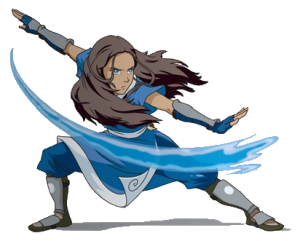
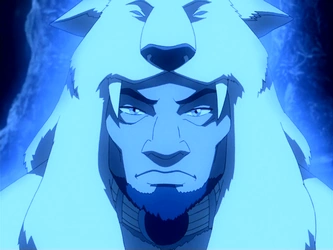

As Tribos da Água são comunidades localizadas principalmente nas regiões polares do mundo de Avatar.
Seu elemento representativo é a água, que pode ser controlada pelos dobradores de água.
As Tribos da Água são comunidades localizadas principalmente nas regiões polares do mundo de Avatar.
Seu elemento representativo é a água, que pode ser controlada pelos dobradores de água.

As comunidades possuem uma forte ligação com o mar e com ambientes gelados. A sobrevivência depende bastante dos recursos encontrados nesses locais.
A lua possui uma relação importante com a dobra de água. Os primeiros dobradores aprenderam observando seus movimentos.

Katara é uma das principais personagens da história e uma habilidosa dobradora de água. Ela acompanha Aang durante sua jornada.

Kuruk foi um Avatar da Tribo da Água que viveu antes de Kyoshi e Roku, sendo um dos Avatares conhecidos da história.
| Característica | Informação | Elemento |
|---|---|---|
| Nação | Tribos da Água | Água |
| Dobradores originais | Lua | Água |